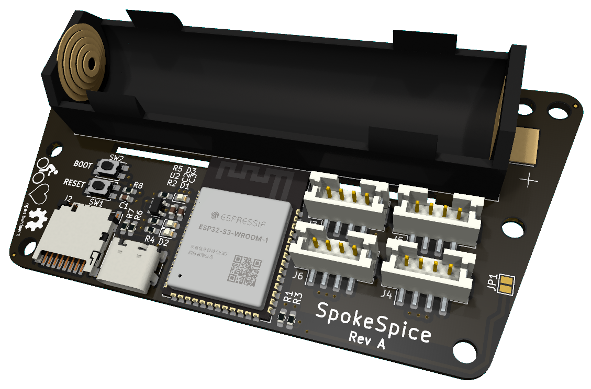
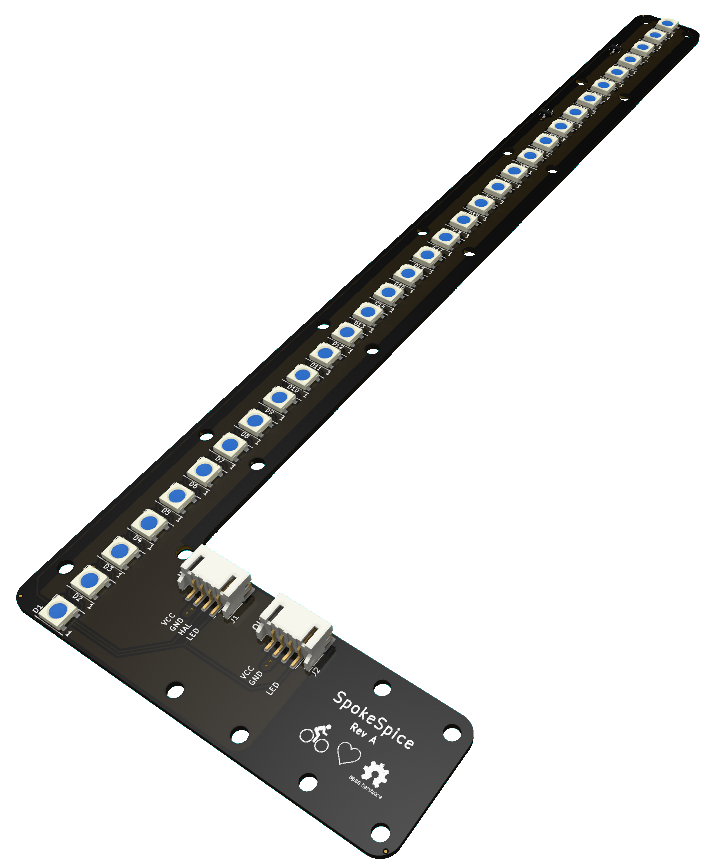

All KiCad design files are available in the GitHub repository.
Controller board

The controller board is based on the ESP32 microcontroller and features a USB-C connector for programming and debugging.
It features a battery holder for an 18650 Li-Ion cell, a 3.3V LDO regulator, an SD card slot and 4 connectors for the arms.
Several mounting holes in the PCB allow it to be mounted in a variety of different spoke configurations.
For the sake of simplicity, the controller board does not feature a battery charging circuit. The battery must be charged externally.
There is also no voltage regulation for the LEDs. The LEDs are powered directly from the battery, which is a 3.7V cell.
Consquently, there is also no reverse polarity protection to avoid the voltage drop and hence the energy loss.
The battery must hence be inserted with the correct polarity.
Arms

Arms are made to be attached to the spokes of a 28-inch bicycle wheel.
Several mounting holes in the PCB allow them to be mounted in a variety of different spoke configurations.
Each arm PCB features 32 WS2812B RGB LEDs and is connected to the controller board via a 4-pin cable.
A second 4-pin cable can be used to daisy-chain a second arm on the other side of the wheel, which
will then display the same content.
A hall effect sensor is used to detect the speed of the wheel and to synchronize the display with the rotation.
Please have a look at the GitHub repository for more information.
Interested in building your own?
To build your own SpokeSpice, you will need to order the PCBs and the components from a PCB manufacturer and an electronics distributor, respectively.
There is currently no kit available for purchase, but we are thinking about setting up a link to a service that will allow you to order the assembled PCBs.
If you are interested in this, please let us know by opening an issue in the GitHub repository.